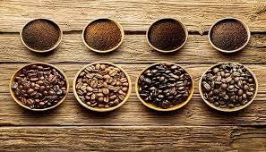

Variedades
Sí, el café no es un mundo, es un auténtico universo. Por eso seguro que alguna vez te has preguntado cuántas variedades de café existen. En realidad los tipos de grano de café que se conocen hasta el momento se pueden agrupar tan solo en 4 categorías. Impresiona, ¿verdad?
Los granos de café conforman la materia prima de esta bebida culto de nuestra sociedad, que se recogen de un arbusto denominado cafeto localizado especialmente en Yemen y Etiopía.
Así, distinguimos 4 variedades de café, que son las siguientes: